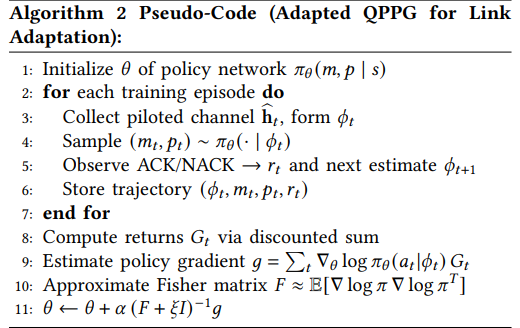
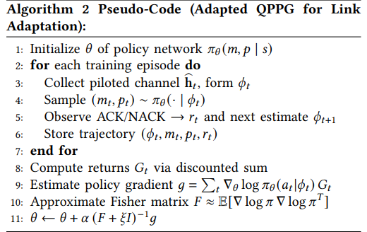
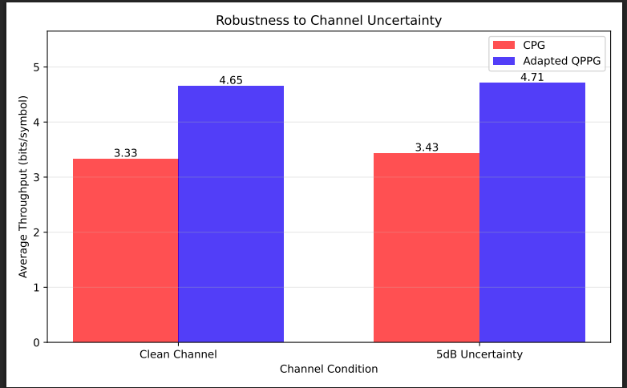

Connection to Wireless Networks
Our QPPG algorithm can be adopted for link adaptation in a noisy fading wireless channel.
Reinforcement learning (RL) in quantum control faces unique challenges due to measurement-induced stochasticity and environmental noise.
Classical policy-gradient methods often converge slowly under high variance, while value-based quantum variants may require extensive experience replay. We introduce Quantum–Preconditioned Policy Gradients (QPPG), a natural‐gradient–inspired algorithm that whitens policy updates using the full inverse quantum Fisher information (QFI) with Tikhonov regularization. QPPG bridges classical and quantum geometry by reducing to ideal quantum natural gradients as the regularizer vanishes yet remains stable under noisy QFI estimates. We benchmark QPPG against Classical REINFORCE (CPG), a block-diagonal quantum natural policy gradient (QNPG), and a Quantum Deep Q-Network (Q-DQN) in both a two-state classical environment and a custom single-qubit Gym task with depolarizing, amplitude-damping, and dephasing noise.
Across five random seeds, QPPG achieves 90% of its maximum return in only (\(100 \pm 12\)) episodes—over four times faster than CPG (\(420 \pm 5\)) and nearly three times faster than Q‐DQN (\(278 \pm 35\)). Under elevated noise (15%), QPPG attains a 90% success rate, surpassing CPG (80%), QNPG (85%), and Q‐DQN (78%). These results demonstrate that full inverse‐QFI preconditioning delivers both rapid, stable learning and strong noise resilience, paving the way for scalable quantum RL in larger Hilbert spaces.
Our QPPG algorithm can be adopted for link adaptation in a noisy fading wireless channel.
We simulate a single-user Rayleigh-fading channel with 4 receiving antennas and pilot signal-to-noise ratio(SNR). The agent selects modulation and transmit power to maximize successful throughput.
.png)
.png)

There's a lot of excellent work that was very useful for the completion of this work.
Quantum Natural Gradient leveraged QFI to accelerate convergence in noiseless bandit settings.
Simple Statistical Gradient-following Algorithms for Connectionist Reinforcement Learning estimated the gradient of expected return via Monte Carlo sampling.
@article{oluwaseyi2025,
author = {Oluwaseyi, Giwa and Muhammad, Ahmed Mohsin and Muhammad, Ali Jamshed},
title = {Quantum Fisher-Preconditioned Reinforcement Learning: From Single-Qubit Control to Rayleigh-Fading Link Adaptation},
journal = {IEEE Communications Letters},
year = {2025},
}